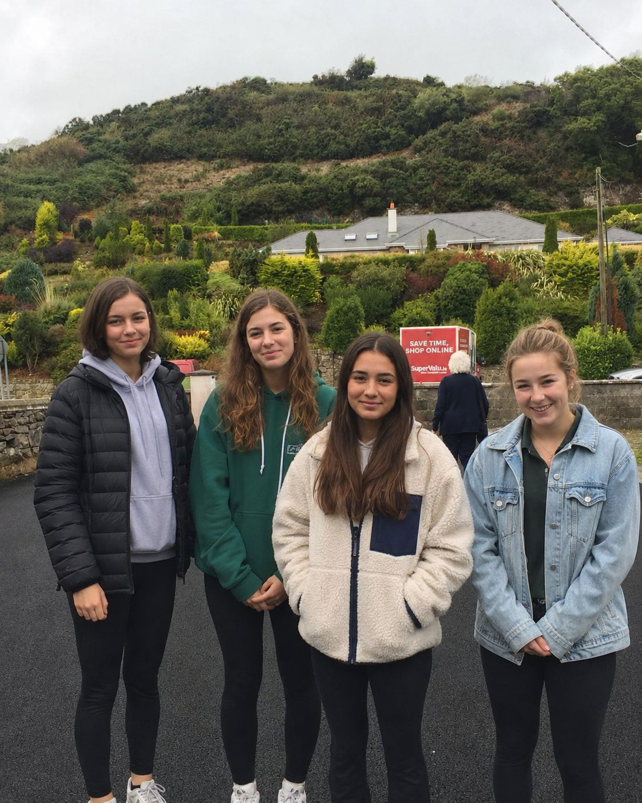
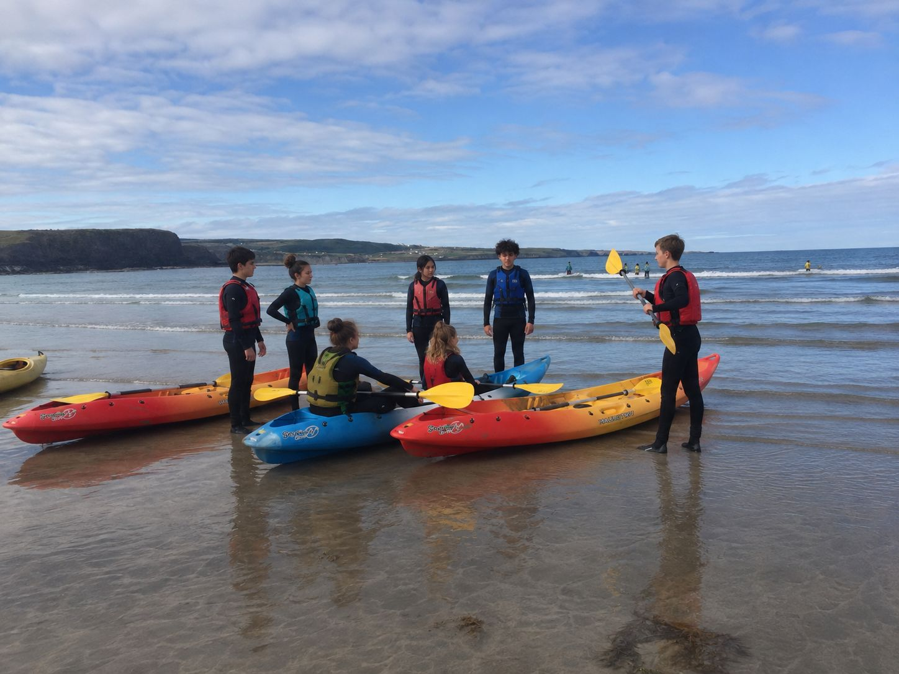
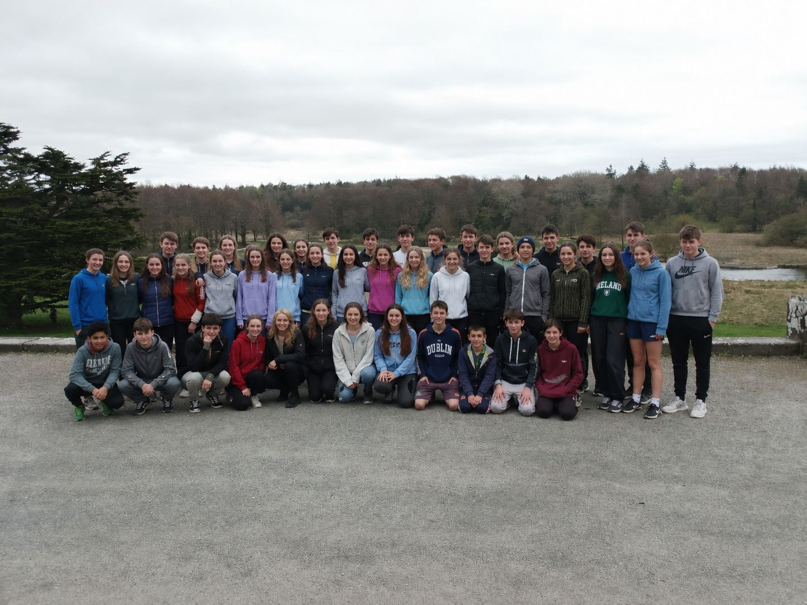

Their education, the best gift
Summer camps, after-school English classes and programmes to study in the United Kingdom, Ireland and the United States.
- 30+ years of experience
- Native teachers
- More than 1,000 families supported
- Programmes in the United Kingdom, Ireland and the United States
A programme for every stage
Three ways to learn English with us, depending on their age and the time of year.
Study abroad
From two weeks to a full school year at a school in the United Kingdom, Ireland or the United States, with our support before, during and after.
See the programmesAfter-school English
English classes at your child's own school, with native teachers and small groups, from October to May.
See the classesSummer camps
A summer in English without leaving Madrid: daily challenges, games and workshops with native-speaking monitors.
See the campFind the right programme for their age
Choose your child's age and we'll show you the programmes that fit.
Choose an age to see the programmes.
Would you rather we advise you? Book a no-obligation call →
We grow with every pupil
We start with them at 3 and stay with them until 18: the same team, the same method and close follow-up at every stage.
-
3–6years

Discover
First steps in English, playing with native teachers.
Camps · After-school -
6–12years

Grow
They gain vocabulary and confidence, year after year.
After-school · Camps -
12–17years

Advance
They gain fluency and independence, with Cambridge exam preparation.
After-school · Cambridge -
10–18years

Live it
English stops being a subject and becomes an experience.
Study abroad
- One method, from age 3 to studying abroad
- We follow their progress, year after year
- Native teachers at every stage
English is learnt by living it.
Academic programmes in the United Kingdom, Ireland and the United States for young people aged 10 to 18, from 2 weeks to a full school year. We support you before, during and after.
- Schools from our portfolioWe suggest the ones that best match their profile and goals.
- A local coordinator on siteHandles anything unexpected throughout the stay.
- No lost school yearWe review their academic path so the year abroad adds up, not subtracts.


We are with you at every step
From first contact to coming home.
-
We talk with you
A no-obligation call to answer all your questions.
Reply within 24 hours -
We get to know the pupil
Their English level, academic record, personality and interests.
Tailored proposal -
You choose the destination, with our help
With our portfolio of schools in the United Kingdom, Ireland and the USA, we help you pick the one that fits best.
Our school portfolio -
We stay close
A local coordinator and 24/7 support throughout the programme, and we help with the return home.
24/7 on site
30 years supporting families
We have grown with families while staying close to them.
We began in Madrid with English classes and summer camps. Over the years, we expanded our programmes to support children and young people from their first steps in English to experiences abroad.
More than 30 years on, we still believe in getting to know each pupil, listening to their family and learning English by living it.
Get to know how we workNative teachers
Every member of our team is a native speaker, trained specifically to teach children and teenagers.
Active methodology
Children learn by playing, experimenting and living the language in every lesson, not by memorising it.
Real support
We're not a platform. Every family has one point of contact who stays with them at every stage.
Global experience
Programmes in Madrid, the United Kingdom, Ireland and the United States, from summer camps to full academic years.
Shall we talk?
Tell us what you're looking for your child and we'll help you find the best option.
Where every summer they discover a new talent
Daily challenges in English, with 100% native monitors, based on the 8 multiple intelligences. Age-based groups, in Madrid. Places sell out every summer.

Dates and sites
Dates
22 Jun – 24 Jul
5 weeks. Choose any you like: they don't have to be consecutive.
Sites
Madrid
Sagrado Corazón Rosales and Sagrado Corazón Chamartín.
Pupils from other schools are welcome, you don't need to attend Sagrado CorazónWhat they do at camp
8 different challenges, a discovery each day, and each one works on a different intelligence.
And a surprise challenge every day.
Age-based groups
Two different formats, each designed for the right stage.

The youngest
Guided play, a gentle pace and first steps in each intelligence, in age-based groups.

More independence
Each day they choose between several challenges, in groups organised by age and level.

A day at TalenTalk
See the full timetable, hour by hour
Morning assembly
English booklet, storytelling and arts & crafts
Snack and getting ready
Snack and change of clothes for the water games
Water games
The most eagerly awaited activity of the day
Change of clothes
We dry off and get ready to carry on
Special activity
Drama, sport or experiments, depending on the day
Lunch and downtime
Lunch and rest before pick-up
Price
The total price depends on the number of weeks you choose, whether or not they are consecutive.
Lunch service (optional): +€52 per week, minimum 25 children enrolled.
Frequently asked questions

Do we need to be pupils at Sagrado Corazón?
No. Pupils from other schools are welcome.
Do we have to sign up for every week?
No. You can choose any weeks you like, consecutive or not.
How does the lunch service work?
It's an optional service at +€52 per week, with a minimum of 25 children enrolled.
Who leads the activities?
100% native monitors, trained to work with children.
When is the place confirmed?
Once you send the enrolment, we confirm the place within 24 hours.
Enrol your child in the camp
Choose the weeks that suit you, they don't have to be consecutive. Fill in the form and we'll confirm the place within 24 hours.
- Under 2 minutes
- Confirmation within 24 hours
From summer camp in Madrid to spending a summer, or a whole school year, abroad. We support families at every stage of the journey.
After-school English to speak, take part and gain confidence
From Early Years to Secondary, at your child's own school and with native teachers in small groups. A continuous programme so every pupil gains real fluency and level speaking English.
- 100% native teachers
- Small groups
- At your child's own school
- From Early Years to Secondary
Timetable and fees for the programme at Colegio Sagrado Corazón.
All in English, from start to finish
Four things that happen in every session, whatever the focus.
Speaking and listening
They listen and speak in English from day one, without translating in their heads.
Communicating with confidence
They learn to say what they think and to stand up for their own ideas.
Vocabulary and level
Progression tailored to their stage, with Cambridge exam preparation.
Play, create and collaborate
Games, projects and teamwork as a way of learning, not as a reward.
A club for every age
The same method, tailored to each pupil's stage, from Early Years to Secondary.
Club Fun TalenTalk
Through play, building listening skills and their first conversations.
Club TalenTalk Walkers
Lively role-play, short dialogues, stories and songs.
Club TalenTalk Prime
Focused projects that enrich their communication skills.
Club TalenTalk Senior Challenge
Real-life situations and active practice to boost their level.
KETPETFCECAEWhat they take away, beyond the language
- Fluency and confidence when speaking in front of others.
- Vocabulary and listening skills, year after year.
- Creativity and critical thinking.
- Teamwork and emotional intelligence.
Ideal for families who…
- Want their child to speak more English, not memorise more.
- Are looking for continuity all year round, not one-off classes.
- Value small groups and close attention.
- Prefer an activity at their own school.
Many of these families stay with us when their children make the leap to studying abroad, from weekly English to a summer or a full academic year away.
Frequently asked questions
What ages is the programme for?
From Early Years to Secondary. Each stage has its own club, with goals and activities suited to their age.
How are the groups organised?
By school stage, in small groups that open from 8 pupils, so everyone gets real time to speak.
Are the teachers really native speakers?
Yes. 100% of our teaching staff are native speakers, specifically trained to teach children and young people, not just to speak the language.
When do classes start and finish?
The programme runs from October to May, following the school calendar, in the afternoon at your child's own school.
How much does it cost and what's included?
At Colegio Sagrado Corazón, €65 a month plus €35 a year for materials. If your school is a different one, get in touch and we'll confirm the terms.
Is it right for your child's age and stage?
Tell us their year group and what you're looking for, and we'll guide you with no commitment.
Ask about places for the yearStudy in the United Kingdom, Ireland or the United States
From two weeks to a full school year, for ages 10 to 18. We help you choose the destination and the school, and we stay with you before, during and after.
- Ages 10 to 18
- From 2 weeks
- Local coordinator on site

Three destinations, the same support
The specific school, accommodation and dates depend on each centre. We work that out with you.
How long away?
Four options. Pupils usually start in September, though it depends on the school and the dates.
-
2 to 4 weeks
A first immersion away from home, with the reassurance of a short stay.
Ask about this -
One term
Enrolment at the host school for part of the academic year.
Ask about this -
One semester
Half a school year at the host school.
Ask about this -
Full school year
The whole year abroad, coordinated with the school back in Spain.
Ask about this
Looking for the summer camp in Madrid? That is a different programme: see summer camps →
We are with you at every step
-
01
We get to know the pupil
English level, school record, character and interests. We propose nothing without this.
-
02
We choose destination and school
We look for the centre that fits their profile and what you are looking for.
-
03
We prepare the departure
We organise the paperwork and the trip, so you are not left sorting out formalities on your own.
-
04
We stay close
Local coordinator and follow-up throughout the stay.


Interlanguage pupils during their stay abroad.
What families ask us
What is a typical day like?
Every morning with the host family, breakfast and off to school like anyone else. Lessons in English, activities in the afternoon and weekends with the family or other international students. They live like a local pupil, with the whole routine.
What if they fall behind at school?
We review the academic path beforehand so the year abroad adds up rather than setting them back. We work with schools that recognise subjects, we coordinate with the school in Spain on full-year programmes, and we plan the return so they rejoin without gaps.
What if the host family does not work out?
Host families go through a selection and verification process, and have hosted international students before. Before the trip you have a video call to meet them. If something does not fit once there, there is a procedure to change family at no extra cost.
What about safety?
Programmes include international medical insurance for the stay, a local coordinator for anything unexpected and an emergency contact in Spain. Your child is never on their own, however far away they are.
How much does it cost?
It depends on the destination, the length and the school. We work it out with you in the first conversation, with no obligation.
When should we start?
There is no single date: it depends on the school and on the programme dates. Every case is different, which is why the first step is to talk.
Are you considering it for next year?
Tell us their age, their level and what you have in mind. We will tell you honestly whether it fits and what the options are.
Ask for guidanceFor families with children aged 10 to 18.
English specialities
Themed programmes that use a specific passion (drama, music or science) as a vehicle for practising English, for children who already have a foundation and want to take it further.
- Drama, music and themed projects in English
- Designed for pupils with an upper-intermediate level
- Small, highly specialised groups
- A perfect complement to after-school classes or camp
Thirty years growing alongside the families who trust us
Interlanguage Studies has been teaching English to children and young people in Madrid for over 30 years, with the same idea from the start: a language isn't memorised, it's lived. We started with classes and summer camps, and have grown alongside the families who placed their trust in us at every new stage.
English is learnt by living it.
More than 30 years have taught us that a language isn't memorised: it's used.
The same team and the same method support every pupil at every stage: what keeps a family with us for years isn't a one-off programme, but a way of teaching that stays consistent from age 3 to studying abroad.
Specifically trained to teach children, not just to speak the language.
Shall we talk about your case?
Tell us your child's age and level. We'll tell you honestly which programme fits best.
Talk to us →